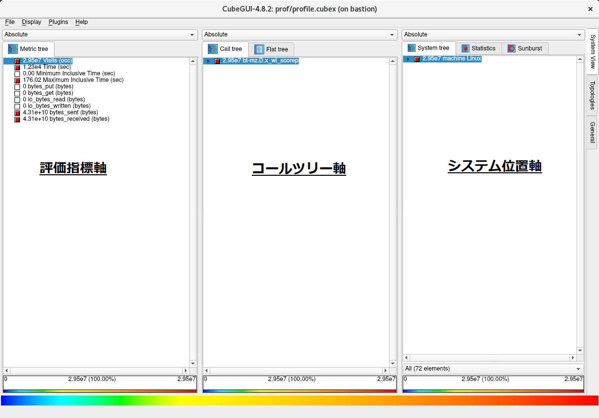
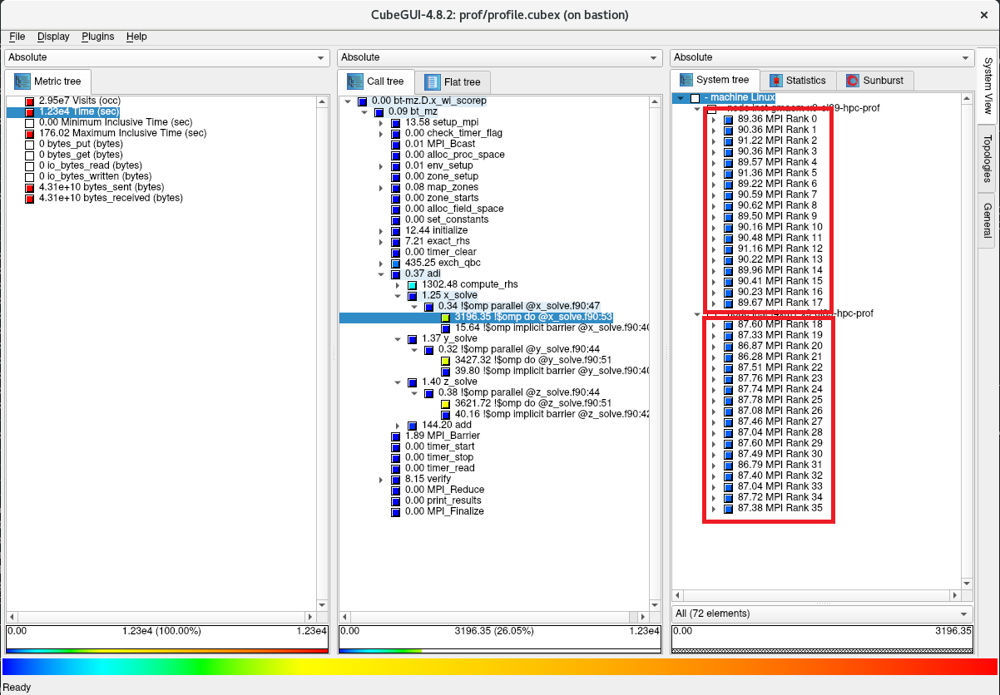
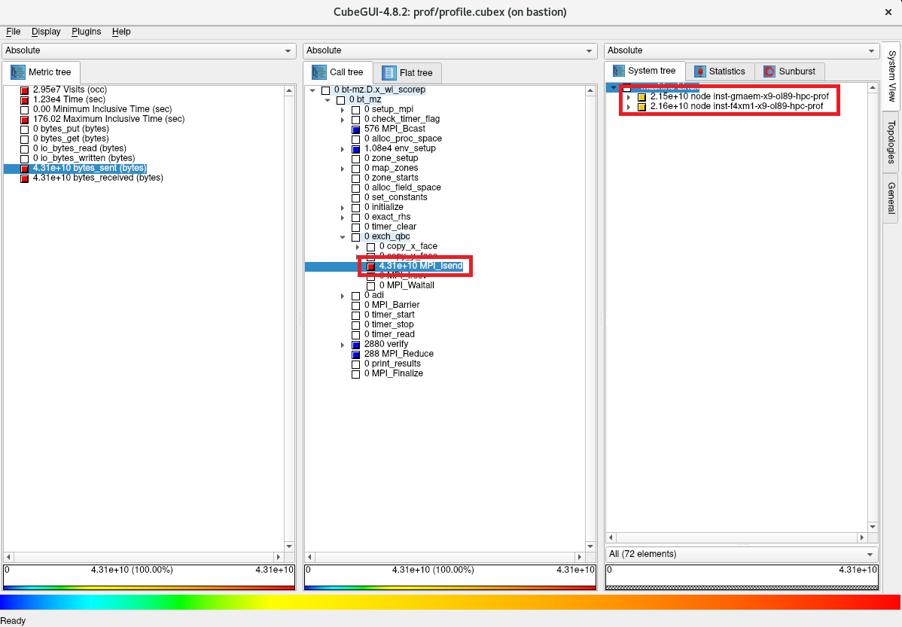

0. 概要
Score-P は、HPCに於ける高並列アプリケーションをスケーラブルで簡易にプロファイリング（※1）することを目的に開発されたオープンソースのプロファイリングツールで、以下の代表的な並列プログラミングモデルに対応しています。
- スレッド並列
- OpenMP
- Pthreads
- プロセス並列
- MPI
- SHMEM
- GPU並列
- CUDA
- OpenCL
- OpenACC
また Score-P は、並列アプリケーションの評価指標に対して、統計的に扱うプロファイリング手法（※1）とタイムスタンプと共に扱うトレーシング手法（※1）の何れにも対応しており、解析用途に合わせたプロファイリングが可能です。
※1）本プロファイリング関連Tipsでは、性能向上を目的とした並列アプリケーションの性能解析プロセス全般を プロファイリング と呼称し、この中で評価指標を統計的に扱う プロファイリング の1つの方法を プロファイリング手法 と呼称します。これに対し、評価指標をタイムスタンプと共に扱う プロファイリング の1つの方法を トレーシング手法 と呼称します。
また Score-P は、 PAPI が取得するハードウェアカウンタ等の情報を取り込むことで、以下のように浮動小数点演算数等の情報をサブルーチンや関数単位で集計することが可能です。
Scalasca は、 Score-P が出力するトレーシング手法のデータをタイムスタンプ情報を元に解析する機能を持ち、並列アプリケーションのクリティカルパスの特定やプロセス間・スレッド間で発生する待ち時間等、プロファイリング手法では得られない情報を提供します。
また Scalasca は、 Score-P のフロントエンドとしても機能し、殆どの Score-P の操作を Scalasca から実施することが可能です。
CubeGUI は、Score-P が出力するプロファイリング手法のデータを読み込むことで、プロファイリング対象の並列アプリケーションを以下の3評価軸で表示し、
- 評価指標軸
- CPU時間
- MPI通信データ量
- I/Oデータ量
- コールツリー軸
- サブルーチン・関数
- MPI関数
- OpenMPループ
- システム位置軸
- ノード
- MPIプロセス
- OpneMPスレッド
以下のようにGUIで視覚的に表示することで、

以下の観点で並列アプリケーションをプロファイリングすることが可能です。
- MPI通信によるスケーラビリティへの影響
- MPI通信が全体に対してどの程度の時間を占めているか
- 最も通信データ量の多いMPI関数は何か
- 各MPIプロセスのMPI通信データ量に偏りがあるか
- ロードバランス不均衡によるスケーラビリティへの影響
- MPIで並列化されたループの実行に各計算ノードがどの程度時間を要しているか
- MPIで並列化されたループの実行に各MPIプロセスがどの程度時間を要しているか
- OpenMPで並列化されたループの実行に各OpenMPスレッドがどの程度時間を要しているか
- ホットスポットの特定
- 最も時間を要しているサブルーチンはどこか
- 最もMPI通信データ量の多いMPI関数はどのサブルーチンから呼ばれているか
- I/Oによるスケーラビリティへの影響
- I/Oがどの程度の時間を要しているか
また CubeGUI は、 Scalasca がトレーシング手法のデータを解析した結果を読み込んで、以下のようにGUIで確認することが可能です。

以上の各ツールの関係は、 Score-Pのウェブサイト に記載のある以下のアーキテクチャ図が参考になります。

以上を踏まえて本プロファイリング関連Tipsは、 NAS Parallel Benchmarks をプロファイリング対象の並列アプリケーションに使用し、 Score-P 、 Scalasca 、及び CubeGUI でプロファイリング手法とトレーシング手法を使用するプロファイリングの手順を解説します。
各ソフトウェアは、以下のバージョンを前提とします。
- 計算ノードOS ： Oracle Linux 8.10ベースのHPC クラスタネットワーキングイメージ （※2）
- BastionノードOS ： Oracle Linux 8.10ベースのHPC クラスタネットワーキングイメージ （※2）
- OpenMPI ：5.0.6（※3）
- PAPI ：7.1.0
- Score-P ：9.1
- Scalasca ：2.6.2
- CubeGUI ：4.9
※2）OCI HPCテクニカルTips集 の クラスタネットワーキングイメージの選び方 の 1. クラスタネットワーキングイメージ一覧 のイメージ No.12 です。
※3） OCI HPCテクニカルTips集 の Slurm環境での利用を前提とするUCX通信フレームワークベースのOpenMPI構築方法 に従って構築された OpenMPI です。
本プロファイリング関連Tipsで使用するプロファイリング環境は、プロファイリング対象の並列アプリケーションを Score-P や Scalasca と共に実行する計算ノードに クラスタ・ネットワーク で相互接続する2ノードの BM.Optimized3.36 を使用し、計算ノードで採取したプロファイリングのデータを CubeGUI で解析するBastionノードに1ノードの VM.Optimized3.Flex を使用します。
ここで CubeGUI がX11ベースのアプリケーションのため、この操作画面を表示するXサーバの稼働する CubeGUI 操作端末を用意します。

以降では、以下の順に解説します。
1. プロファイリング環境構築
1-1. HPCクラスタ構築
本章は、本プロファイリング関連Tipsで使用するHPCクラスタを構築します。
この構築は、 OCI HPCチュートリアル集 の HPCクラスタを構築する(基礎インフラ手動構築編) の手順に従い実施します。
この際、計算ノードとBastionノードを以下のように構成します。
- 計算ノード ブート・ボリューム サイズ ： 100GB以上（インストールするソフトウェアの容量確保のため）
- 計算ノードSMT : 無効（※4）
- Bastionノード ブート・ボリューム サイズ ： 200GB以上（インストールするソフトウェアの容量確保のため）
- Bastionノードコア数 ： 8コア（ CubeGUI のコンパイル高速化のため）
※4）SMTを無効化する方法は、 OCI HPCパフォーマンス関連情報 の パフォーマンスに関連するベアメタルインスタンスのBIOS設定方法 を参照してください。
また計算ノードは、プロファイリング利用ユーザのホームディレクトリをNFSで共有します。
1-2. 前提条件ソフトウェアインストール・セットアップ
本章は、本プロファイリング関連Tipsで使用する Score-P の前提条件ソフトウェアとして、計算ノードに OpenMPI と PAPI をインストール・セットアップします。
この方法は、以下コンテンツのインストール・セットアップの章を参考に、この順番で実行します。
なお本章の作業は、全ての計算ノードで実施します。
1-3. Score-Pインストール・セットアップ
本章は、 Score-P を計算ノードにインストールし、利用に必要な環境設定を行います。
なお本章の作業は、全ての計算ノードに実施します。
以下コマンドをrootユーザで実行し、 Score-P の前提条件ソフトウェアをインストールします。
$ yum-config-manager --enable ol8_codeready_builder ol8_developer_EPEL
$ dnf install -y binutils-devel libunwind libunwind-devel gcc-plugin-devel llvm-devel clang-devel cmake
次に、以下コマンドをrootユーザで実行し、 Score-P をインストールします。
これにより、 Score-P が /opt/scorep にインストールされます。
$ mkdir ~/`hostname` && cd ~/`hostname` && wget https://perftools.pages.jsc.fz-juelich.de/cicd/scorep/tags/scorep-9.1/scorep-9.1.tar.gz
$ tar -xvf ./scorep-9.1.tar.gz
$ export PATH=/opt/openmpi/bin:$PATH
$ cd scorep-9.1 && ./configure --with-libgotcha=download
$ make -j 36 && make install
次に、以下コマンドを Score-P を利用するユーザで実行し、 Score-P 実行に必要な環境変数を設定します。
$ echo "export PATH=/opt/scorep/bin:\$PATH" | tee -a ~/.bashrc
$ source ~/.bashrc
1-4. Scalascaインストール・セットアップ
本章は、 Scalasca を計算ノードにインストールし、利用に必要な環境設定を行います。
なお本章の作業は、全ての計算ノードに実施します。
以下コマンドをrootユーザで実行し、 Scalasca をインストールします。
これにより、 Scalasca が /opt/scalasca にインストールされます。
$ cd ~/`hostname` && wget https://apps.fz-juelich.de/scalasca/releases/scalasca/2.6/dist/scalasca-2.6.2.tar.gz
$ tar -xvf ./scalasca-2.6.2.tar.gz
$ cd scalasca-2.6.2 && ./configure
$ make -j 36 && make install
次に、以下コマンドを Scalasca を利用するユーザで実行し、 Scalasca 実行に必要な環境変数を設定します。
$ echo "export PATH=/opt/scalasca/bin:\$PATH" | tee -a ~/.bashrc
$ source ~/.bashrc
次に、以下コマンドをrootユーザで実行した結果となるよう、 sshd_config ファイルを修正します。
これは、 Score-P と Scalasca 実行に必要な環境変数をSSH経由でリモートノードに引き渡すために必要です。
なおこの手順と次の手順は、プロファイリングジョブをジョブスケジューラを介して実行することでリモートノードへの環境変数の引き渡しが行われる場合は、実施する必要がありません。
$ diff /etc/ssh/sshd_config_org /etc/ssh/sshd_config
117c117
< #PermitUserEnvironment no
---
> PermitUserEnvironment yes
135a136
> AcceptEnv SCOREP_* SCAN_*
$
次に、以下コマンドをrootユーザで実行し、先の sshd_config ファイルの修正を反映します。
$ systemctl restart sshd
次に、以下のファイルを Score-P を利用するユーザで作成し、このパーミッションを 600 とします。
これは、 Score-P と Scalasca 実行に必要な環境変数をSSH経由でリモートノードに引き渡すために必要です。
なおこの手順は、プロファイリングジョブをジョブスケジューラを介して実行することでリモートノードへの環境変数の引き渡しが行われる場合は、実施する必要がありません。
$ cat ~/.ssh/config
Host *
SendEnv SCOREP_* SCAN_*
$
1-5. CubeGUIインストール・セットアップ
本章は、 CubeGUI をBastionノードにインストールし、利用に必要な環境設定を行います。
以下コマンドをopcユーザで実行し、 CubeGUI の前提条件ソフトウェアである Qt の前提条件ソフトウェアをインストールします。
$ sudo yum-config-manager --enable ol8_codeready_builder ol8_developer_EPEL
$ sudo dnf install -y cmake mesa-libGL mesa-libGL-devel mesa-dri-drivers git xauth xcb-proto xcb-util-devel xcb-util-wm xcb-util-wm-devel xcb-util-cursor xcb-util-cursor-devel libXrender-devel xcb-util-keysyms xcb-util-keysyms-devel libxkbcommon-devel libxkbcommon-x11 libxkbcommon-x11-devel fontconfig-devel freetype-devel libXext-devel libSM-devel libICE-devel
次に、以下コマンドをopcユーザで実行し、 CubeGUI の前提条件ソフトウェアである Qt をインストールします。
これにより、 Qt が /usr/local/Qt-5.15.17 にインストールされます。
なお、makeコマンドの並列数はBastionノードのコア数に合わせて調整します。
また本手順は、8コアのVMインスタンスで30分程度を要します。
$ mkdir ~/`hostname` && cd ~/`hostname` && git clone https://code.qt.io/qt/qt5.git
$ cd qt5 && git checkout 5.15
$ perl init-repository
$ ./configure -opensource -confirm-license -nomake examples -nomake tests
$ make -j 16 && sudo make install
次に、以下コマンドをopcユーザで実行し、 CubeGUI の前提条件ソフトウェアである CubeLib をインストールします。
$ cd ~/`hostname` && wget https://apps.fz-juelich.de/scalasca/releases/cube/4.9/dist/cubelib-4.9.tar.gz
$ tar -xvf ./cubelib-4.9.tar.gz
$ cd cubelib-4.9 && ./configure
$ make -j 16 && sudo make install
次に、以下コマンドをopcユーザで実行し、 CubeGUI をインストールします。
これにより、 CubeGUI が /opt/cubegui にインストールされます。
なお、makeコマンドの並列数はBastionノードのコア数に合わせて調整します。
$ cd ~/`hostname` && wget https://apps.fz-juelich.de/scalasca/releases/cube/4.9/dist/cubegui-4.9.tar.gz
$ tar -xvf ./cubegui-4.9.tar.gz
$ cd cubegui-4.9 && ./configure --with-qt=/usr/local/Qt-5.15.17/bin --with-cubelib=/opt/cubelib/bin
$ make -j 16 && sudo make install
次に、以下コマンドをプロファイリング利用ユーザで実行し、 CubeGUI 実行に必要な環境変数を設定します。
$ echo "export PATH=/usr/local/Qt-5.15.17/bin:/opt/cubegui/bin:\$PATH" | tee -a ~/.bashrc
$ source ~/.bashrc
次に、Xサーバの稼働する CubeGUI 操作端末から以下コマンドを実行し、Xフォワードを有効にしてBastionノードにプロファイリング利用ユーザでログインします。
$ ssh -X user@bastion_IP
Activate the web console with: systemctl enable --now cockpit.socket
Last login: Tue Apr 23 10:35:11 2024 from x.y.z.w
/usr/bin/xauth: file /home/opc/.Xauthority does not exist
$ printenv DISPLAY
localhost:10.0
$
次に、以下コマンドをプロファイリング利用ユーザで実行し、
$ cube
以下のように CubeGUI のスタート画面が起動することを確認します。

2. プロファイリング手法データの取得
2-0. 概要
本章は、NAS Parallel Benchmarks をプロファイリング対象とし、 Scalasca から起動する Score-P でプロファイリング手法によるプロファイリングを実施します。
ここでは、ノードあたり36コアを搭載する BM.Optimized3.36 を2ノード使用することから、36 MPIプロセス・2 OpenMPスレッドの組み合わせを使用します。
この際、プロファイリングによるオーバーヘッドを考慮した精度の良いプロファイリングを PAPI による浮動小数点演算数を含まない場合と含む場合で取得するため、以下の手順で実施します。
- 事前準備
- NAS Parallel Benchmarks バイナリの作成
- プロファイリングを実施しない場合の実行時間を計測
- プロファイリングを実施した場合の実行時間を計測
- 両者に隔たりがある場合プロファイリング対象を限定するフィルタを作成
- 浮動小数点演算数を含まないプロファイリング手法データの取得
- フィルタを適用して浮動小数点演算数を含まないプロファイリングを実施
- 先の実行時間の隔たりが解消していることを確認
- 浮動小数点演算数を含むプロファイリング手法データの取得
- フィルタを適用して浮動小数点演算数を含むプロファイリングを実施
- 先の実行時間の隔たりが解消していることを確認
2-1. 事前準備
以下コマンドを計算ノードのプロファイリング利用ユーザで実行し、プロファイリングを実施しない NAS Parallel Benchmarks のバイナリ（bt-mz.D.x_wo_scorep）とプロファイリングを実施する NAS Parallel Benchmarks のバイナリ（bt-mz.D.x_wi_scorep）を作成します。
$ mkdir ~/`hostname` && cd ~/`hostname` && wget https://www.nas.nasa.gov/assets/npb/NPB3.4.3-MZ.tar.gz
$ tar -xvf ./NPB3.4.3-MZ.tar.gz
$ cd NPB3.4.3-MZ/NPB3.4-MZ-MPI
$ cp config/make.def.template config/make.def
$ make bt-mz CLASS=D
$ mv bin/bt-mz.D.x bin/bt-mz.D.x_wo_scorep
$ sed -i 's/^FC = mpif90/FC = scorep-mpif90/g' config/make.def
$ diff config/make.def.template config/make.def
32c32
< FC = mpif90
---
> FC = scorep-mpif90
$ make clean
$ make bt-mz CLASS=D
$ mv bin/bt-mz.D.x bin/bt-mz.D.x_wi_scorep
次に、以下コマンドを計算ノードのプロファイリング利用ユーザで実行し、プロファイリングを実施しない場合の実行時間を計測します。
$ mpirun -n 36 -N 18 -machinefile ~/hostlist.txt -x UCX_NET_DEVICES=mlx5_2:1 -x OMP_NUM_THREADS=2 -bind-to none ./bin/bt-mz.D.x_wo_scorep | grep "Time in seconds"
Time in seconds = 168.55
$
次に、以下コマンドを計算ノードのプロファイリング利用ユーザで実行し、プロファイリングを実施した場合の実行時間を計測します。
この実行により、カレントディレクトリにディレクトリ scorep_bt-mz_18p36xO_sum が作成され、ここに取得したプロファイリングデータが格納されます。
$ scalasca -analyze mpirun -n 36 -N 18 -machinefile ~/hostlist.txt "-x UCX_NET_DEVICES=mlx5_2:1" "-x OMP_NUM_THREADS=2" "-bind-to none" ./bin/bt-mz.D.x_wi_scorep 2>&1 | grep "Time in seconds"
Time in seconds = 361.36
$
次に、両者の実行時間に2倍以上の隔たりがあるため、以下のコマンドを計算ノードのプロファイリング利用ユーザで実行し、プロファイリングのオーバーヘッドの原因を調査します。
$ scalasca -examine -s scorep_bt-mz_18p36xO_sum
INFO: Post-processing runtime summarization report (profile.cubex)...
/opt/scorep/bin/scorep-score -r ./scorep_bt-mz_18p36xO_sum/profile.cubex > ./scorep_bt-mz_18p36xO_sum/scorep.score
INFO: Score report written to ./scorep_bt-mz_18p36xO_sum/scorep.score
$ head -n 35 scorep_bt-mz_18p36xO_sum/scorep.score
Estimated aggregate size of event trace: 3329GB
Estimated requirements for largest trace buffer (max_buf): 94GB
Estimated memory requirements (SCOREP_TOTAL_MEMORY): 94GB
(warning: The memory requirements cannot be satisfied by Score-P to avoid
intermediate flushes when tracing. Set SCOREP_TOTAL_MEMORY=4G to get the
maximum supported memory or reduce requirements using USR regions filters.)
flt type max_buf[B] visits time[s] time[%] time/visit[us] region
ALL 99,883,283,163 137,448,437,987 25760.66 100.0 0.19 ALL
USR 99,849,533,550 137,419,676,413 12396.99 48.1 0.09 USR
OMP 29,449,094 24,287,232 12827.09 49.8 528.14 OMP
COM 2,660,710 3,613,660 11.28 0.0 3.12 COM
MPI 1,793,380 860,646 525.31 2.0 610.36 MPI
SCOREP 41 36 0.00 0.0 31.35 SCOREP
USR 32,473,108,434 44,677,967,872 5688.95 22.1 0.13 binvcrhs
USR 32,473,108,434 44,677,967,872 4001.02 15.5 0.09 matmul_sub
USR 32,473,108,434 44,677,967,872 2419.04 9.4 0.05 matvec_sub
USR 858,664,976 1,152,495,616 139.60 0.5 0.12 lhsinit
USR 858,664,976 1,152,495,616 91.55 0.4 0.08 binvrhs
USR 783,427,736 1,080,078,336 56.47 0.2 0.05 exact_solution
OMP 2,533,092 1,028,096 0.13 0.0 0.12 !$omp parallel @exch_qbc.f90:206
OMP 2,533,092 1,028,096 0.13 0.0 0.12 !$omp parallel @exch_qbc.f90:217
OMP 2,533,092 1,028,096 0.14 0.0 0.13 !$omp parallel @exch_qbc.f90:245
OMP 2,533,092 1,028,096 0.13 0.0 0.13 !$omp parallel @exch_qbc.f90:256
OMP 1,271,592 516,096 1.20 0.0 2.33 !$omp parallel @rhs.f90:29
OMP 1,266,546 514,048 0.33 0.0 0.65 !$omp parallel @z_solve.f90:44
OMP 1,266,546 514,048 0.26 0.0 0.51 !$omp parallel @x_solve.f90:47
OMP 1,266,546 514,048 0.32 0.0 0.62 !$omp parallel @y_solve.f90:44
OMP 1,266,546 514,048 0.16 0.0 0.32 !$omp parallel @add.f90:23
MPI 781,865 286,642 0.41 0.0 1.42 MPI_Irecv
MPI 781,865 286,642 1.04 0.0 3.63 MPI_Isend
COM 757,016 1,028,096 2.23 0.0 2.17 copy_x_face
COM 757,016 1,028,096 2.10 0.0 2.04 copy_y_face
$
この出力から、呼び出された回数を示す visits 列の値が大きい region 列を特定し、これに従いプロファイリング対象からこれらの region を除外する以下のフィルタを作成します。
$ cat ./scorep.filt
SCOREP_REGION_NAMES_BEGIN
EXCLUDE
binvcrhs
matmul_sub
matvec_sub
lhsinit
binvrhs
exact_solution
SCOREP_REGION_NAMES_END
$
次に、以下コマンドを計算ノードのプロファイリング利用ユーザで実行し、先のプロファイリングデータを格納するディレクトリを次の実行に備えて別名に変更します。
$ mv scorep_bt-mz_18p36xO_sum prof_wof_wopapi
2-2. 浮動小数点演算数を含まないプロファイリング手法データの取得
以下コマンドを計算ノードのプロファイリング利用ユーザで実行し、フィルタを適用して浮動小数点演算数を含まないプロファイリング手法データを取得します。
この際、その実行時間を 2.1. 事前準備 のプロファイリングを実施しない場合のもの（168.55秒）と比較し、両者の隔たりが解消していることを確認します。
$ scalasca -analyze -f ./scorep.filt mpirun -n 36 -N 18 -machinefile ~/hostlist.txt "-x UCX_NET_DEVICES=mlx5_2:1" "-x OMP_NUM_THREADS=2" "-bind-to none" ./bin/bt-mz.D.x_wi_scorep 2>&1 | grep "Time in seconds"
Time in seconds = 173.31
$
次に、以下コマンドを計算ノードのプロファイリング利用ユーザで実行し、浮動小数点演算数を含まないプロファイリングレポートを作成します。
$ scalasca -examine -s scorep_bt-mz_18p36xO_sum
次に、以下コマンドを計算ノードのプロファイリング利用ユーザで実行し、フィルタの適用により除外した region が表示されないことを確認します。
$ head -n 35 scorep_bt-mz_18p36xO_sum/scorep.score
Estimated aggregate size of event trace: 1155MB
Estimated requirements for largest trace buffer (max_buf): 33MB
Estimated memory requirements (SCOREP_TOTAL_MEMORY): 37MB
(hint: When tracing set SCOREP_TOTAL_MEMORY=37MB to avoid intermediate flushes
or reduce requirements using USR regions filters.)
flt type max_buf[B] visits time[s] time[%] time/visit[us] region
ALL 34,411,239 29,464,803 12311.52 100.0 417.84 ALL
OMP 29,449,094 24,287,232 12006.05 97.5 494.34 OMP
COM 2,660,710 3,613,660 12.29 0.1 3.40 COM
MPI 1,793,380 860,646 292.80 2.4 340.21 MPI
USR 508,014 703,229 0.39 0.0 0.55 USR
SCOREP 41 36 0.00 0.0 30.41 SCOREP
OMP 2,533,092 1,028,096 0.13 0.0 0.12 !$omp parallel @exch_qbc.f90:206
OMP 2,533,092 1,028,096 0.13 0.0 0.12 !$omp parallel @exch_qbc.f90:217
OMP 2,533,092 1,028,096 0.14 0.0 0.13 !$omp parallel @exch_qbc.f90:245
OMP 2,533,092 1,028,096 0.13 0.0 0.13 !$omp parallel @exch_qbc.f90:256
OMP 1,271,592 516,096 1.21 0.0 2.35 !$omp parallel @rhs.f90:29
OMP 1,266,546 514,048 0.53 0.0 1.03 !$omp parallel @z_solve.f90:44
OMP 1,266,546 514,048 0.47 0.0 0.92 !$omp parallel @x_solve.f90:47
OMP 1,266,546 514,048 0.53 0.0 1.03 !$omp parallel @y_solve.f90:44
OMP 1,266,546 514,048 0.16 0.0 0.31 !$omp parallel @add.f90:23
MPI 781,865 286,642 0.39 0.0 1.37 MPI_Irecv
MPI 781,865 286,642 1.00 0.0 3.50 MPI_Isend
COM 757,016 1,028,096 2.57 0.0 2.50 copy_x_face
COM 757,016 1,028,096 2.42 0.0 2.35 copy_y_face
OMP 757,016 1,028,096 11.79 0.1 11.47 !$omp do @exch_qbc.f90:206
OMP 757,016 1,028,096 1.32 0.0 1.29 !$omp implicit barrier @exch_qbc.f90:215
OMP 757,016 1,028,096 8.67 0.1 8.43 !$omp do @exch_qbc.f90:217
OMP 757,016 1,028,096 1.05 0.0 1.02 !$omp implicit barrier @exch_qbc.f90:226
OMP 757,016 1,028,096 18.53 0.2 18.03 !$omp do @exch_qbc.f90:245
OMP 757,016 1,028,096 2.33 0.0 2.27 !$omp implicit barrier @exch_qbc.f90:254
OMP 757,016 1,028,096 12.09 0.1 11.76 !$omp do @exch_qbc.f90:256
$
次に、以下コマンドを計算ノードのプロファイリング利用ユーザで実行し、プロファイリングデータ格納ディレクトリを次の実行に備えて別名に変更します。
$ mv scorep_bt-mz_18p36xO_sum prof_wif_wopapi
2-3. 浮動小数点演算数を含むプロファイリング手法データの取得
以下コマンドを計算ノードのプロファイリング利用ユーザで実行し、フィルタを適用して浮動小数点演算数を含むプロファイリング手法データを取得します。
この際、その実行時間を 2.1. 事前準備 のプロファイリングを実施しない場合のもの（168.55秒）と比較し、両者に大きな隔たりが無いことを確認します。
$ SCOREP_METRIC_PAPI=PAPI_FP_OPS scalasca -analyze -f ./scorep.filt mpirun -n 36 -N 18 -machinefile ~/hostlist.txt "-x UCX_NET_DEVICES=mlx5_2:1" "-x OMP_NUM_THREADS=2" "-bind-to none" ./bin/bt-mz.D.x_wi_scorep 2>&1 | grep "Time in seconds"
Time in seconds = 174.21
$
次に、以下コマンドを計算ノードのプロファイリング利用ユーザで実行し、浮動小数点演算数を含むプロファイリングレポートを作成します。
$ scalasca -examine -s scorep_bt-mz_18p36xO_sum
次に、以下コマンドを計算ノードのプロファイリング利用ユーザで実行し、プロファイリングデータ格納ディレクトリを次の実行に備えて別名に変更します。
$ mv scorep_bt-mz_18p36xO_sum prof_wif_wipapi
3. プロファイリング手法データの確認
3-0. 概要
本章は、先に取得したプロファイリング手法のデータを、 浮動小数点演算数を含まないものと含むものに分けて、その確認を行います。
なお、 2. プロファイリング手法データの取得 により、十分精度の期待できるプロファイリング手法を用いたプロファイリングのデータが計算ノードのプロファイリング利用ユーザのホームディレクトリ配下の以下ディレクトリに作成されているため、以降の手順に備えてこれらをBastionノードのプロファイリング利用ユーザのホームディレクトリ配下に予めコピーしておきます。
- prof_wif_wopapi ：浮動小数点演算数を含まない
- prof_wif_wipapi ：浮動小数点演算数を含む
3-1. 浮動小数点演算数を含まないプロファイリング手法データの確認
以下コマンドを計算ノードのプロファイリング利用ユーザで実行し、トータル時間を評価指標としたプロファイリング結果を表示します。
$ scalasca -examine -s -x "-s totaltime" prof_wif_wopapi
/opt/scorep/bin/scorep-score -s totaltime -r ./prof_wif_wopapi/profile.cubex > ./prof_wif_wopapi/scorep.score
INFO: Score report written to ./prof_wif_wopapi/scorep.score
$ head -n 35 prof_wif_wopapi/scorep.score
Estimated aggregate size of event trace: 1155MB
Estimated requirements for largest trace buffer (max_buf): 33MB
Estimated memory requirements (SCOREP_TOTAL_MEMORY): 37MB
(hint: When tracing set SCOREP_TOTAL_MEMORY=37MB to avoid intermediate flushes
or reduce requirements using USR regions filters.)
flt type max_buf[B] visits time[s] time[%] time/visit[us] region
ALL 34,411,239 29,464,803 12311.52 100.0 417.84 ALL
OMP 29,449,094 24,287,232 12006.05 97.5 494.34 OMP
MPI 1,793,380 860,646 292.80 2.4 340.21 MPI
COM 2,660,710 3,613,660 12.29 0.1 3.40 COM
USR 508,014 703,229 0.39 0.0 0.55 USR
SCOREP 41 36 0.00 0.0 30.41 SCOREP
OMP 378,508 514,048 3658.84 29.7 7117.71 !$omp do @z_solve.f90:51
OMP 378,508 514,048 3477.48 28.2 6764.89 !$omp do @y_solve.f90:51
OMP 378,508 514,048 3239.27 26.3 6301.49 !$omp do @x_solve.f90:53
OMP 380,016 516,096 333.57 2.7 646.34 !$omp do @rhs.f90:77
OMP 380,016 516,096 323.50 2.6 626.81 !$omp do @rhs.f90:292
OMP 380,016 516,096 319.04 2.6 618.18 !$omp do @rhs.f90:182
MPI 228,410 286,642 263.62 2.1 919.67 MPI_Waitall
OMP 380,016 516,096 138.30 1.1 267.98 !$omp do @rhs.f90:59
OMP 378,508 514,048 132.91 1.1 258.56 !$omp do @add.f90:23
OMP 380,016 516,096 132.86 1.1 257.44 !$omp do @rhs.f90:34
OMP 380,016 516,096 40.97 0.3 79.38 !$omp do @rhs.f90:399
OMP 378,508 514,048 38.46 0.3 74.82 !$omp implicit barrier @z_solve.f90:427
OMP 378,508 514,048 37.75 0.3 73.44 !$omp implicit barrier @y_solve.f90:405
MPI 84 36 24.29 0.2 674607.15 MPI_Init
OMP 757,016 1,028,096 18.53 0.2 18.03 !$omp do @exch_qbc.f90:245
OMP 378,508 514,048 14.36 0.1 27.93 !$omp implicit barrier @x_solve.f90:406
OMP 380,016 516,096 13.04 0.1 25.27 !$omp implicit barrier @rhs.f90:410
OMP 380,016 516,096 12.58 0.1 24.37 !$omp implicit barrier @rhs.f90:69
OMP 757,016 1,028,096 12.09 0.1 11.76 !$omp do @exch_qbc.f90:256
OMP 757,016 1,028,096 11.79 0.1 11.47 !$omp do @exch_qbc.f90:206
$
この出力から、以下のことがわかります。
- 以下のソースプログラム中のOpenMPループでそれぞれトータル時間の30%弱を占めている
- z_solve.f90 の51行目
- y_solve.f90 の51行目
- x_solve.f90 の53行目
- MPI通信時間がトータル時間の 2.4% を占めている
- MPI_Waitall関数がトータル時間の 2.1% を占めておりこの分プロセス間のロードバランスに問題がある
次に、以下コマンドをBastionノードのプロファイリング利用ユーザで実行し、 CubeGUI を起動します。
$ cube path_to_dir/prof_wif_wopapi/profile.cubex

次に、以下画面の評価指標軸で Time をクリックし、トータル時間が12,300秒であることを確認します。

次に、以下画面のコールツリー軸で色がより赤に近いサブルーチンを辿り、最上位のサブルーチンで最も時間を占めている adi を突き止めます。

次に、以下画面のコールツリー軸で更に時間を要しているサブルーチンを辿り、先に確認したそれぞれ30％弱のトータル時間を占めているOpenMPループが以下の順に呼び出されていることを確認します。
- bt_mz -> adi -> x_solve -> x_solve.f90 の53行目
- bt_mz -> adi -> y_solve -> y_solve.f90 の51行目
- bt_mz -> adi -> z_solve -> z_solve.f90 の51行目

次に、以下画面のコールツリー軸で x_solve.f90:53 をクリックし、システム位置軸を1階層下がり、このOpenMPループの3,196.35秒の内訳が2台の計算ノードでそれぞれ1,624.47秒と1,571.88秒であることを確認します。

次に、以下画面のシステム位置軸を更に1階層下がり、このOpenMPループの3,196.35秒の内訳が36個のMPIプロセスにどのように配分されているかを確認します。

次に、以下画面のシステム位置軸で1番目の計算ノードのランク0のMPIプロセスをクリックし、このMPIプロセスの89.36秒の内訳が2個のOpenMPスレッドにどのように配分されているかを確認します。

次に、以下画面の評価指標軸で bytes_sent をクリックし、MPI通信の総送信データ量が43.1Gバイトであることを確認します。

次に、以下画面のコールツリー軸で色がより赤に近いサブルーチンを辿り、ほぼ全てのデータを送信しているのが以下の順に呼び出さたMPI_Isend関数であることを確認します。
- bt_mz -> exch_qbc -> MPI_Isend

次に、以下画面のコールツリー軸で MPI_Isend をクリックし、システム位置軸を1階層下がり、このMPI_Isend関数の総データ量の43.1Gバイトの内訳が2台の計算ノードでそれぞれ21.5Gバイトと21.6Gバイトであることを確認します。

次に、以下画面のシステム位置軸を更に1階層下がり、このMPI_Isend関数の総データ量の43.1Gバイトの内訳が36個のMPIプロセスにどのように配分されているかを確認します。
3-2. 浮動小数点演算数を含むプロファイリング手法データの確認
以下コマンドをBastionノードのプロファイリング利用ユーザで実行し、 CubeGUI を起動します。
$ cube path_to_dir/prof_wif_wipapi/profile.cubex
次に、以下画面の評価指標軸で PAPI_FP_OPS をクリックし、総浮動小数点演算数が50.2TFLOPであることを確認します。

次に、以下画面のコールツリー軸で色がより赤に近いサブルーチンを辿り、最上位のサブルーチンで最も浮動小数点演算数の多い adi を突き止めます。

次に、以下画面のコールツリー軸で更に時間を要しているサブルーチンを辿り、最も浮動小数点演算数の多い3個のOpenMPループでそれぞれ14.5TFLOP、14.6TFLOP、及び14.6TFLOP実行され、これらが以下の順に呼び出されていることを確認します。
- bt_mz -> adi -> x_solve -> x_solve.f90 の53行目
- bt_mz -> adi -> y_solve -> y_solve.f90 の51行目
- bt_mz -> adi -> z_solve -> z_solve.f90 の51行目

次に、以下画面のコールツリー軸で x_solve.f90:53 をクリックし、システム位置軸を1階層下がり、このOpenMPループの14.5TFLOPの内訳が2台の計算ノードでそれぞれ7.24TFLOPと7.22TFLOPであることを確認します。

次に、以下画面のシステム位置軸を更に1階層下がり、このOpenMPループの14.5TFLOPの内訳が36個のMPIプロセスにどのように配分されているかを確認します。

次に、以下画面のシステム位置軸で1番目の計算ノードのランク0のMPIプロセスをクリックし、このMPIプロセスの402GFLOPの内訳が2個のOpenMPスレッドにどのように配分されているかを確認します。
4. トレーシング手法データの取得
本章は、NAS Parallel Benchmarks をプロファイリング対象とし、 Scalasca から起動する Score-P でトレーシング手法によるプロファイリングを取得します。
ここでは、先のプロファイリング手法と同様36 MPIプロセス・2 OpenMPスレッドの組み合わせを使用します。
この際、プロファイリングによるオーバーヘッド発生を考慮した精度の良いプロファイリングデータを取得するため、先のプロファイリング手法で作成したフィルタを使用します。
以下コマンドを計算ノードのプロファイリング利用ユーザで実行し、フィルタを適用してトレーシング手法データを取得します。
この際、その実行時間を 2.1. 事前準備 のプロファイリングを実施しない場合のもの（168.55秒）と比較し、両者に大きな隔たりが無いことを確認します。
ここで、 2.2. 浮動小数点演算数を含まないプロファイリング手法データの取得 のフィルタを適用した際のプロファイリングレポートの出力 Estimated memory requirements (SCOREP_TOTAL_MEMORY) に表示されているトレーシング手法のデータを格納するために必要なメモリ領域サイズの37MBを環境変数に指定して実行することに留意します。
$ SCOREP_TOTAL_MEMORY=37M scalasca -analyze -q -t -f ./scorep.filt mpirun -n 36 -N 18 -machinefile ~/hostlist.txt "-x UCX_NET_DEVICES=mlx5_2:1" "-x OMP_NUM_THREADS=2" "-bind-to none" ./bin/bt-mz.D.x_wi_scorep 2>&1 | grep "Time in seconds"
Time in seconds = 174.91
次に、以下コマンドを計算ノードのプロファイリング利用ユーザで実行し、プロファイリングデータ格納ディレクトリを次の実行に備えて別名に変更します。
$ mv scorep_bt-mz_18p36xO_trace trac_wif
5. トレーシング手法データの確認
本章は、先に取得したトレーシング手法のデータを確認します。
なお、 4. トレーシング手法データの取得 により、十分精度の期待できるトレーシング手法を用いたプロファイリングのデータが計算ノードのプロファイリング利用ユーザのホームディレクトリ配下のディレクトリ trac_wif に作成されているため、以降の手順に備えてこれをBastionノードのプロファイリング利用ユーザのホームディレクトリ配下に予めコピーしておきます。
以下コマンドをBastionノードのプロファイリング利用ユーザで実行し、 CubeGUI を起動します。
$ cube path_to_dir/trac_wif/scout.cubex

次に、以下画面の評価指標軸で Critical path profile をクリックし、プログラム実行時のクリティカルパスに176.93秒要していることを確認します。

次に、以下画面のコールツリー軸で色がより赤に近いサブルーチンを辿り、最上位のサブルーチンで最もクリティカルパスに占める実行時間の多い adi を突き止めます。

次に、以下画面のコールツリー軸で更に実行時間の多いサブルーチンを辿り、最もクリティカルパスに占める実行時間の多い3個のOpenMPループでそれぞれ45.72秒、49.72秒、及び53.36秒を要し、これらが以下の順に呼び出されていることを確認します。
- bt_mz -> adi -> x_solve -> x_solve.f90 の53行目
- bt_mz -> adi -> y_solve -> y_solve.f90 の51行目
- bt_mz -> adi -> z_solve -> z_solve.f90 の51行目
次に、以下画面のコールツリー軸で x_solve.f90:53 をクリックし、システム位置軸を1階層下がり、このOpenMPループの45.72秒の内訳が2台の計算ノードでそれぞれ45.37秒と0.35秒であり、片側の計算ノードでほぼすべてのクリティカルパスの実行時間が占められていることを確認します。

次に、以下画面のシステム位置軸を更に1階層下がり、このOpenMPループの45.72秒の内訳が36個のMPIプロセスにどのように配分されているかを確認、ランク11のMPIプロセスで大部分のクリティカルパスの実行時間が占められていることを確認します。

次に、以下画面のシステム位置軸で1番目の計算ノードのランク11のMPIプロセスをクリックし、このMPIプロセスの36.63秒の内訳が2個のOpenMPスレッドにどのように配分されているかを確認します。